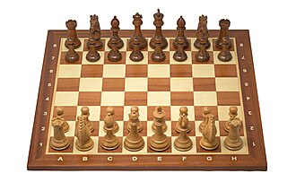
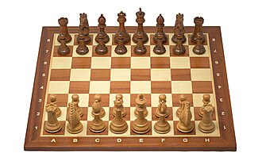
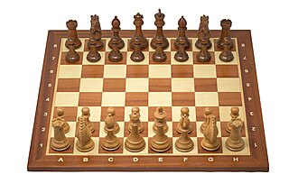

Història dels escacs
 


Els escacs tenen més de mil anys d’història i són un dels jocs d’estratègia més importants del món.

Els escacs tenen més de mil anys d’història i són un dels jocs d’estratègia més importants del món.